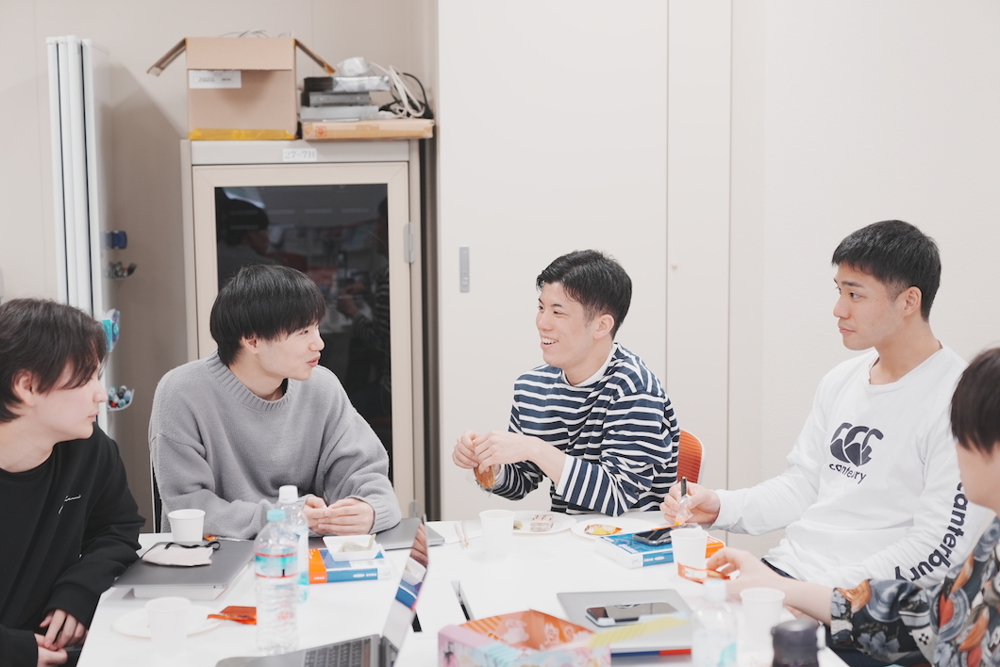
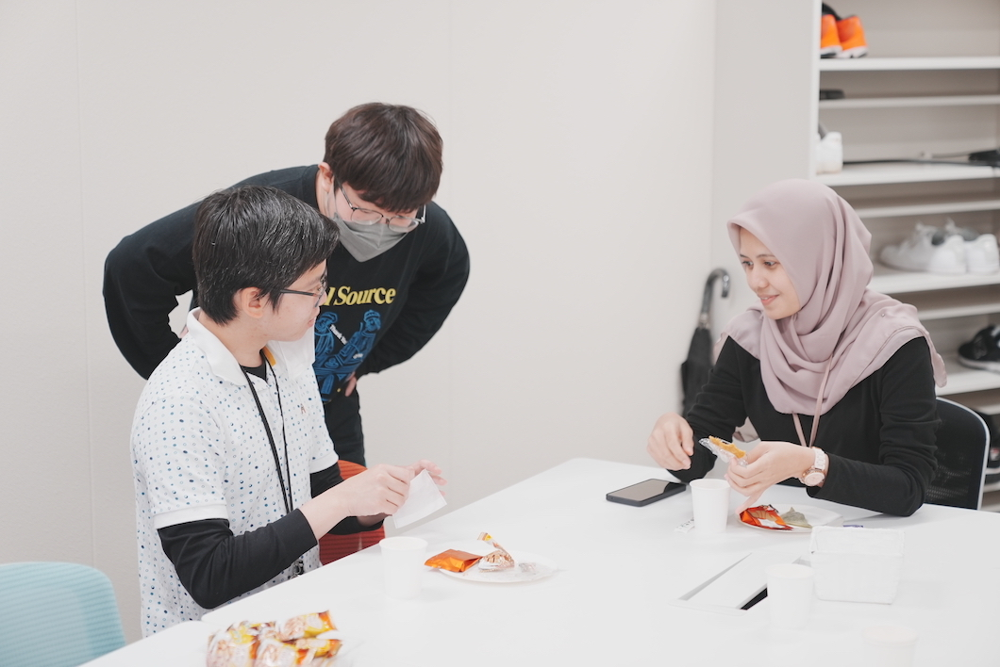

Laboratory Life
研究室で多文化お茶会を開催しました！ 場所: 社会知能研究室 日時: 2023年4月26日(水)



概要
社会知能研究室はタイ出身のアンペア先生や、中国、インドネシアからの留学生もおり、多国籍な研究室です。 そのため、それぞれの国のお菓子やお茶を持ち寄って、多文化のお茶会を開催することにしました！ 中国の紅茶や、東南アジアでポピュラーなコーヒー味の飴、インドネシアのウェハースのようなお菓子とピーナッツを砕いて固めたお菓子、 そして日本の八ツ橋やぬれ煎餅など、さまざまな国の飲み物やお菓子がたくさん並びました。 皆さんはじめて見るお菓子や紅茶を食べながら、味の感想や各国の文化について談笑し、とても楽しい会となりました🎵